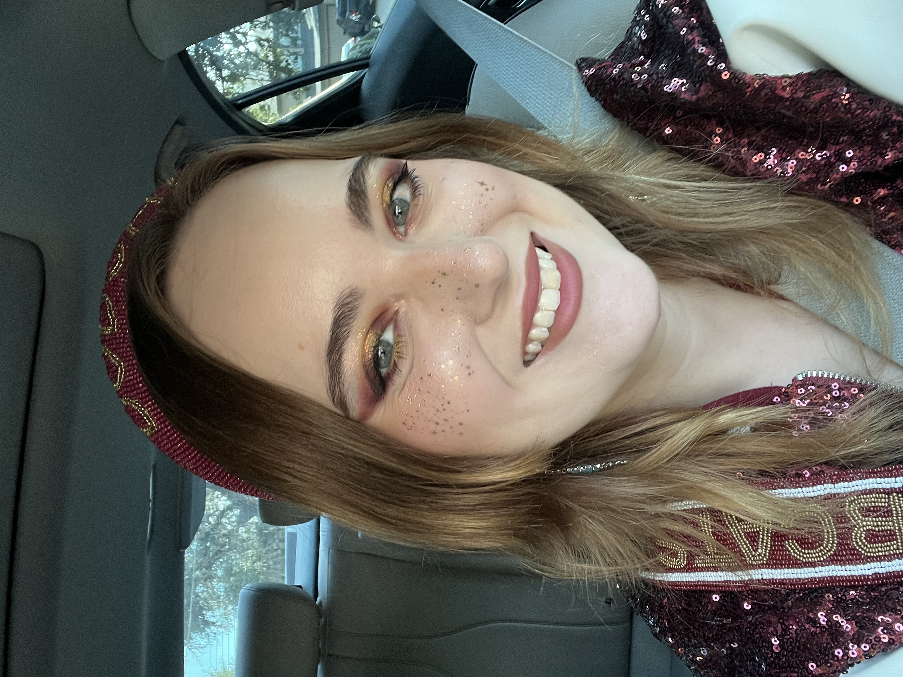

My love for makeup began in kindergarten, when I first wore it for dance performances, and it has stayed with me ever since. Ironically, I didn’t get to wear it again until I joined the dance team in middle school. That was when I finally had the chance to put on a full face for the first time. From then on, I started to practice different techniques and placements. Makeup quickly became something I not only appreciated, but became good at.
Once I perfected the basic placements, I began experimenting with colors, finishes, and styles. Each experiment taught me more about the secret rules of makeup. As I grew older, I noticed gaps in the beauty industry and felt that I could help improve it. I believe I could contribute to meaningful innovations in packaging, product design, and functionality. My passion is not only in the application of makeup but also how the makeup it'self can be improved.
What I love most about makeup is the creativity, the artistry, and the confidence it can give. I believe makeup has the power to change how someone feels and views themselves. A common misconception is that makeup makes people insecure, but I see it differently. In my opinion, the real problem lies in the way products are marketed, often adhering to a single standard of beauty. Insecurity often comes from the lack of representation of diverse facial features, while makeup can actually make people feel more beautiful and more comfortable in their own skin.
| Finishes | Texture | Type |
|---|---|---|
| Shimmer | Matte | Liquid |
| Glitter | Dewy | Cream |
| Mettallic | Sheer | Powder |